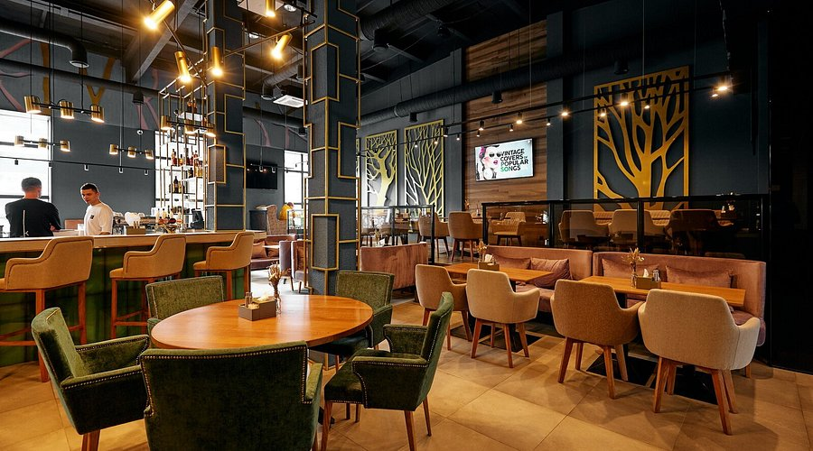

F&B Restaurant


«F&B Restaurant» — это не просто место для ужина или вечеринки.
Это настоящий театральный антураж, воплощенный в изысканном пространстве,
где каждая деталь интерьера
погружает гостей в чувственный и роскошный мир парижского кабаре.
Описание интерьера ресторана можно начать с главного:
вдохновением для его создания стал легендарный
«F&B Restaurant» — символ страсти и манящей таинственности.
Здесь все — от бархатных текстур до светового оформления —
работает на создание атмосферы праздника, интриги и эстетического наслаждения.